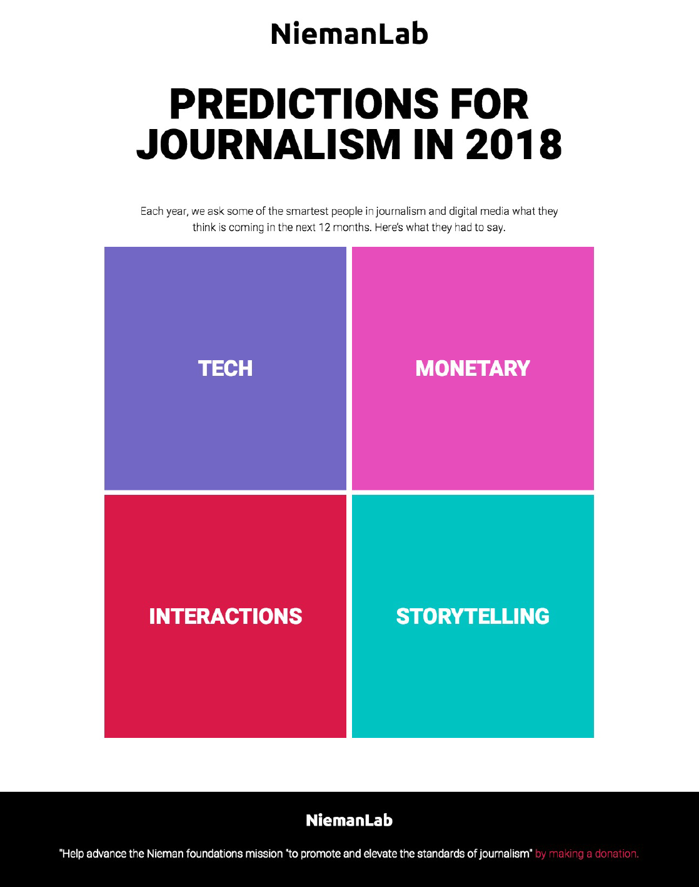
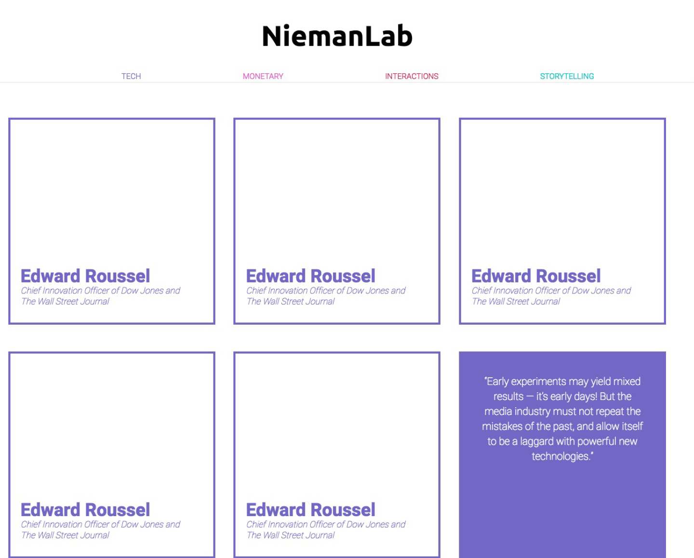
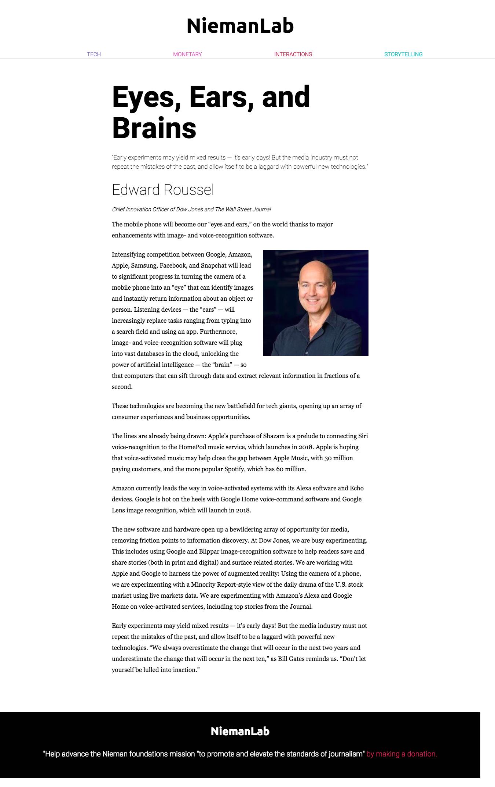

After spending time on the original NeimanLab website, browsing through different articles, we realized that there are problems, opportunities, and strengths that all exist within it. To start, the majority of the problems are focused around certain design, user experience, and organizational issues that present themselves on the site. For example, NeimanLab set up their “Predictions for Journalism 2018” article in a way where readers can potentially feel like they're scrolling through a never-ending list that goes on perpetually. Also, we found that this list was not arranged in any specific order or sequence. Therefore, it is hard to navigate and choose what you, personally, want to spend time reading and learning about. A combination of a constant scroll and disarray of information leads to readers losing focus and eventually leaving the webpage entirely. With that said, these problems do have room and opportunity to improve upon them. There is possibility for a redesign of the material so it is formatted in a clearer and more user friendly method. Lastly, though we feel as though the original NeimanLab website is in need of much refinement, there are strengths belonging to the primary design. That amount of content NeimanLab was able to collect is extensive and provides different opinions and perspectives.
In our redesigned version of the NeimanLab website, we decided to focus on presenting the content in a simplistic and minimal fashion and really pushed towards creating the most user-friendly way of accessing the website’s information. The new NeimanLab article would most likely be a 70% reading experience and a 30% searching/browsing experience. Though it is set up in a way where searching/browsing and jumping from page to page are encouraged, reading is still required for most of the content provided. The overall visit would take 5-10 minutes and can be finished in one sitting. The user is encouraged to visit articles on the site, which are broken down into four different categories: money, technology, interactions, and storytelling. This way, the reader can browse whatever topic they are most interested in. The type of person who reads this website is someone who cares about the future of journalism and is visually focused on simplicity and minimalism. They want the straight facts/information in a clean, organized, and well designed manner. In theory, they would be a 20+ journalist, writer, web-designer, activist, or business-person who is an avid reader, curious about peoples’ opinions, and likes things "to the point."
Our revamped NeimanLab webpage is divided into four different categories, money, technology, interactions, and storytelling, which we decided were the common reoccuring themes that appeared in the numerous articles of “Predictions for Journalism 2018.” We decided to make the homepage very direct by displaying four boxes, each having a different category title, allowing the reader to choose and enter into what most interested them. After selecting a specific box, you are taken to another landing page with a grid of all the articles relating to that specific topic. Finally, once clicking the specific article you want to view, you are taken to that page with all of its content.
Our group worked really well together as a team. We met once to collaborate and come up with the main design of our new website, but we primarily communicated via Slack. We broke up the coding into different parts, based on different skill sets and levels, so that we could all practice and gain more knowledge.
Cienna Fernandez: Developing Editor
Jorge Romero: Visual Designer
Talia Moore: Co-Project Manager/Co-Editor
Ivy Schneider: Co-Project Manager
After working together to create a redesigned version of NeimanLab’s “Predictions for Journalism 2018,” we learned a lot about the process through our experience. For one, regarding design analysis, it is important before you even begin designing to think about what initially works, what doesn’t, and what can be improved. By thinking about this, it will allow you to better understand what needs to be solved. Also, when redesigning, it is crucial to think about what works on mobile and what works on desktop and how to find a balance between the two when it comes to visual design. There are times you might really want to execute a certain style, however, it just is impossible or ends up not looking as clean as expected. Therefore, patience is necessary as well as an open mind. Another takeaway from this systems design project is maintaining a reason as to why you redesign something and how that helps your end goal. Additions or subtractions should make sense and not necessarily be just arbitrary. Lastly, thinking about group members’ roles, it is imperative to work together as a team. Though each person might bring different skills, in the end what matters is how you communicate with each other and how you can help each other create the best product possible.
Our main focus on redesigning NeimanLab’s “Predictions for Journalism 2018” article was to organize all the content they provided in the most simple and direct way possible. Since we feel as though their original website requires a lot of scrolling, we decided that creating a way for the reader to select what they want to view would be the best method for a clean look. We appointed four categories that we believe encapsulate the reoccurring messages in the 2018 predictions: money, technology, interactions, and storytelling. This way, instead of having to scroll until finding something interesting, the reader can automatically jump into a topic that inspires them.
